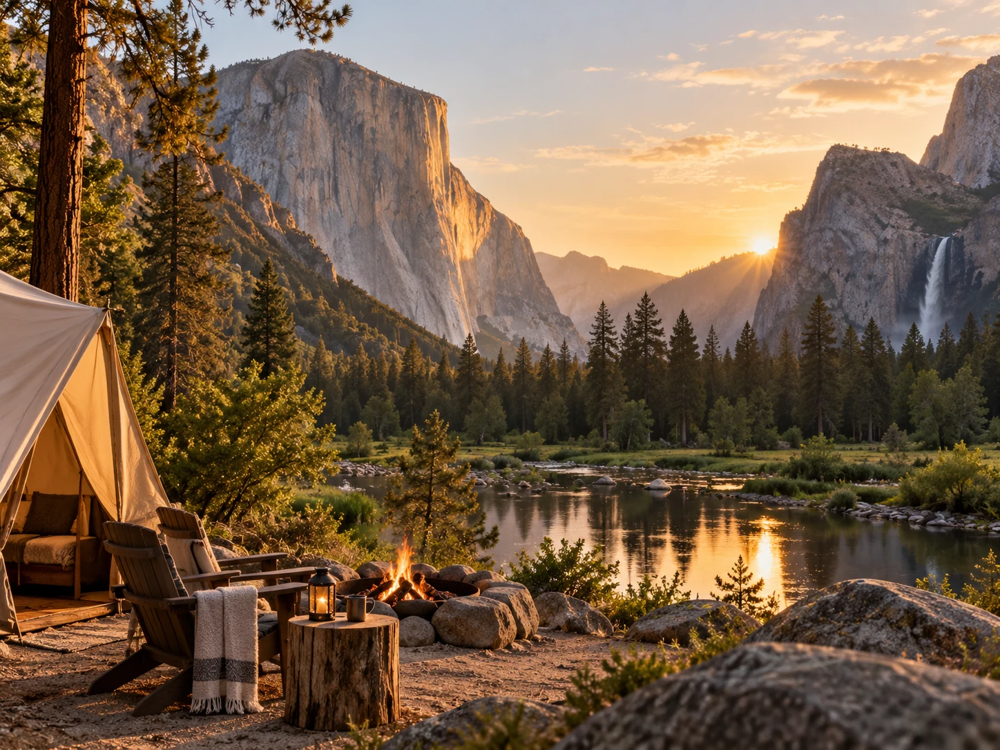
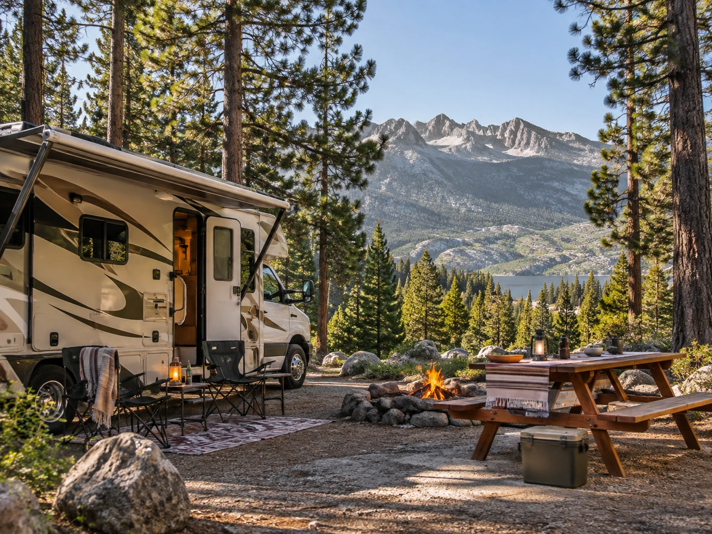

RV camping makes bad weather easier
An RV gives you a real bed, indoor storage, a place to change clothes, and protection from rain, wind, and cold. That can make a long trip far more comfortable, especially for families or people who do not sleep well on the ground.
You also have more room for food, gear, and recovery after a long hiking day.
Tent camping is simpler than people think
A good tent, sleeping pad, warm sleeping bag, and simple cooking setup can be enough for a comfortable weekend. You do not need to own a truck full of equipment to start.
Tent camping also gives you access to smaller sites and campgrounds where large vehicles may have restrictions.

The cost difference can be huge
RVs can involve rental costs, fuel, campground hookups, dumping fees, insurance, and parking logistics. Tent camping usually costs less and uses a regular vehicle you already have.
For a one or two night experiment, tent camping is usually the cheaper way to find out whether you even enjoy sleeping outdoors.
Driving an RV changes the trip
A large vehicle requires more attention to height, length, road conditions, gas stations, and parking. Some scenic roads or campsites have vehicle size limits.
If the destination is built around hiking and exploring small towns, you may prefer a small camper van or a tent setup instead of a large motorhome.
Choose based on the experience you want
If you want comfort and a mobile base, choose the RV. If you want to hear the night sounds, keep the setup light, and feel closer to the environment, choose the tent.
Neither one is more authentic. They are simply different ways to spend time outside.